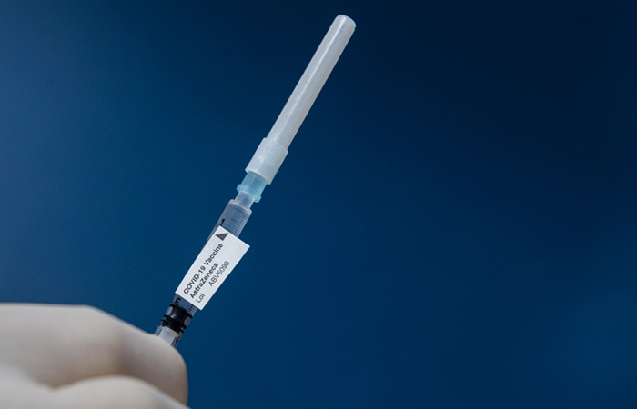

Инспектор ВОЗ предположил, что Китай опоздал объявить об эпидемии COVID-19
Москва.15 февраля.INTERFAX.RU - Исследователи из Всемирной организации здравоохранения (ВОЗ), изучающие происхождение коронавируса в Китае, при посещении китайского города Уханя, где вирус был обнаружен впервые, пришли к выводу, что его распространение, вероятно, началось раньше, чем считалось, сообщил телеканал CNN.
Ведущий исследователь миссии ВОЗ Питер Бен Эмбарек рассказал телеканалу, что миссия обнаружила несколько признаков более широкого распространения вируса в 2019 году, в том числе впервые установила, что в Ухане уже в декабре было обнаружено более десятка штаммов вируса.
'Вирус широко циркулировал в Ухане в декабре, что является новым открытием', - сказал эксперт.
В качестве подтверждения он сообщил, что китайская сторона дала возможность пообщаться с первым заразившимся еще 8 декабря.
Китайская сторона официально информировала ВОЗ о выявлении нового типа коронавируса 31 декабря 2019 года.
Эмбарек отметил, что китайские ученые представили группе данные о 174 случаях заболевания коронавирусом, зарегистрированных в Ухане в декабре 2019 года.Из этих 100 случаев были подтверждены лабораторными исследованиями, еще 74 - клиническим диагнозом, основанном на симптомах у пациентов.
По словам эксперта, заболевания, вызванные коронавирусом, только в 15% случаев протекают в тяжелой форме, в большинстве случаев - в легкой.Поэтому он не исключил, что были выявлены не все заболевшие, их общее число в декабре могло превышать 1 тыс.человек.
Накануне советник президента США по нацбезопасности Джейк Салливан призвал Китай обнародовать всю имеющуюся в его распоряжении информацию о происхождении коронавируса COVID-19.Говоря о расследовании ВОЗ о происхождении коронавируса, он отметил, что у США есть вопросы по поводу ряда выводов, в частности - 'насчет того, каким образом они были сделаны'.
В ответ в посольстве КНР в США указали, что власти США выдвигают обвинения против других стран в связи с пандемией COVID-19, однако именно действия Вашингтона оказали негативный эффект на международные усилия по борьбе с этой эпидемиологической угрозой.
Ранее в феврале группа экспертов ВОЗ в сопровождении китайских коллег посетила китайский город Ухань, в котором в конце 2019 года медики впервые обнаружили следы COVID-19.По итогам поездки в ВОЗ заявили, что вопрос о происхождении вируса все еще остается открытым.При этом специалисты назвали маловероятной версию о том, что вирус изначально хранился в лаборатории в Ухане, а затем каким-то образом начал распространяться за ее пределами.
Версию о лабораторном происхождении коронавирусной инфекции озвучивали, в частности, в администрации предыдущего президента США Дональда Трампа.

Posted On: 2021-02-15T01:07:00
Content Date: 2021-02-15
Download Date: 2021-03-17
Document ID: L0C049BBX